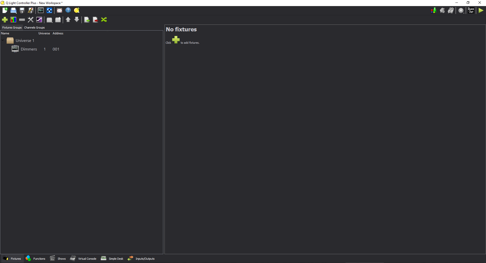
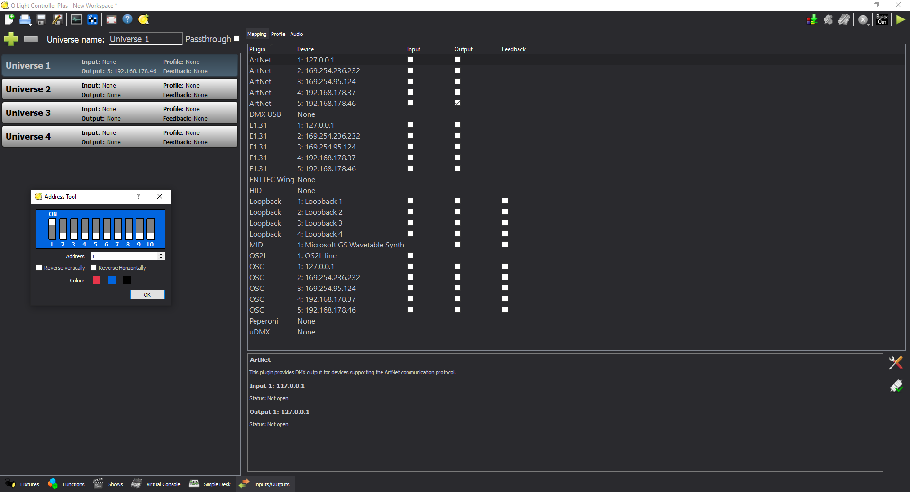

Xilef12000
Home Projects Gallery

|
|
|  |  |
QLC+ dark mode/theme.
Very simple installation.
See https://github.com/Xilef12000/qlcplus-dark-theme for more info.
See https://www.instructables.com/QLC-Dark-Theme/ for more info.
Go to https://github.com/Xilef12000/qlcplus-dark-theme click on the right under the "Releases" tab on the latest version.
Download the "Source code (zip)" file on the bottom.
Unzip the folder.
Copy the "qlcplusStyle.qss" file to the correct path:
LINUX
$HOME/.qlcplus
Windows
C:\Users\YOURUSERNAME\QLC+\qlcplusStyle.qss
MacOS
~/Library/Application Support/QLC+/qlcplusStyle.qss
Make sure that QLC+ is closed while performing this action.
Restart QLC+.
And QLC+ should start in dark-mode.